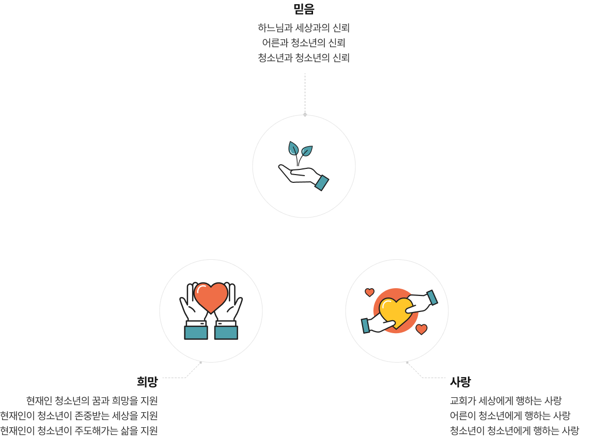
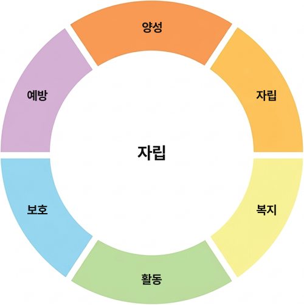
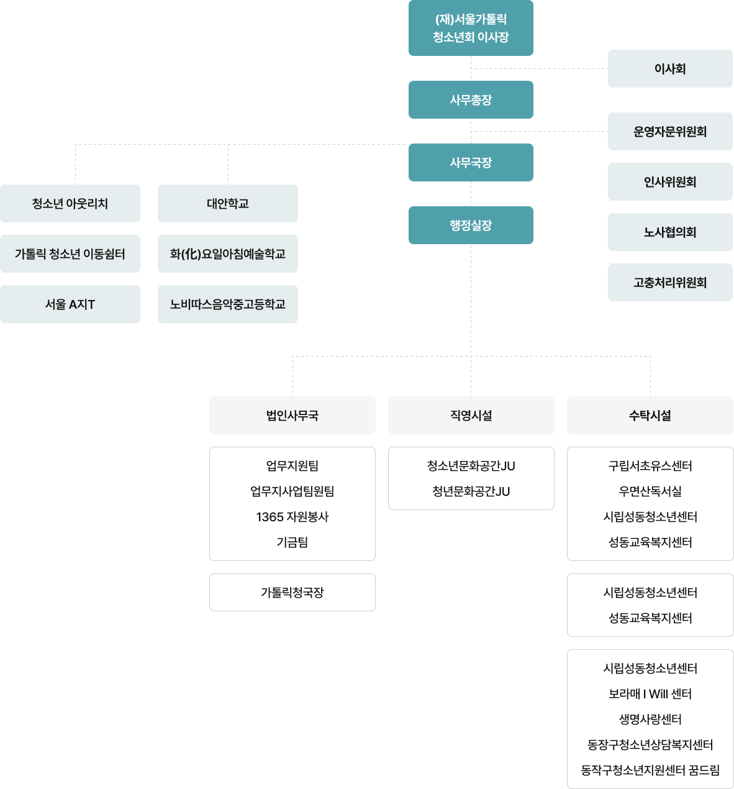

안녕하십니까?
(재)서울가톨릭청소년회 이사장 이경상 바오로 주교입니다.
(재)서울가톨릭청소년회는 “삼위일체이신 하느님의 사랑으로 초대된 청소년들이 예수 그리스도를 본받아 ‘참 인간’으로 성장하도록 돕는다”는 이념 아래에 1999년에 설립되었으며, 현재 청소년들을 위한 직영 및 위탁 시설을 다수 운영하고 있습니다.
우리 법인은, 예수님께서 “어린이들이 나에게 오는 것을 막지 말고 그냥 놓아두라(마르코 10,14)”고 말씀하시며 “어린이들을 끌어안으시고 그들에게 손을 얹어 축복해(마르코 10,16)” 주신 것처럼 특별히 어린이를 사랑하신 그 마음을 본받아, 청소년들이 원하고 필요로 하는 다양한 프로그램을 마련함으로써 세상의 모든 청소년이 행복할 수 있는 환경을 마련코자 노력하며, 아울러 청소년들을 사랑하는 지도자들을 양성하는 데에도 많은 노력을 하고 있습니다.
청소년들이 사랑을 가득 받으며, 예수 그리스도를 닮은'참 인간'으로 성장할 수 있도록 많은 관심 부탁드립니다.
창립일 : 1999년 9월 1일
소재지 : 서울시 중구 명동길 74-3 서울대교구 교구청별관 4층
연락처 : 02-727-2095
가톨릭은 청소년을 사랑합니다.
모든 청소년이 삼위일체이신 하느님의 사랑으로 초대되어, 예수 그리스도를 본받아 참 인간으로 성장하도록 돕는다.

우리는 모든 청소년과 함께 동반하는 청소년회가 되고자 한다.
우리는 본당(지역) 중심으로 청소년과 함께 동반하는 청소년회가 되고자 한다.
우리는 청소년의 희망과 미래를 지원하는 전문 청소년기관이 되어 청소년과 동반하고자 한다.
우리는 교회 및 지역사회와 함께 소통하고 연대하는 네트워크 기관이 되어 청소년과 동반하고자 한다.

| 구립 및 시립 시설 위탁 운영 | 서초유스센터, 성동청소년센터, 보라매청소년센터 |
|---|---|
| 청소년 시설 직영 |
|
| 국제청소년성취포상제 운영 기관 설치 | |
| 창의적 체험 활동 지원 |
| 국제 교류 사업 |
|
|---|---|
| 운영 기관 국제 교류 사업 지원 |
|
| 지역(본당) 연계 사업 활성화 |
|
| 법인 주관 청소년 활동 운영 |
|
